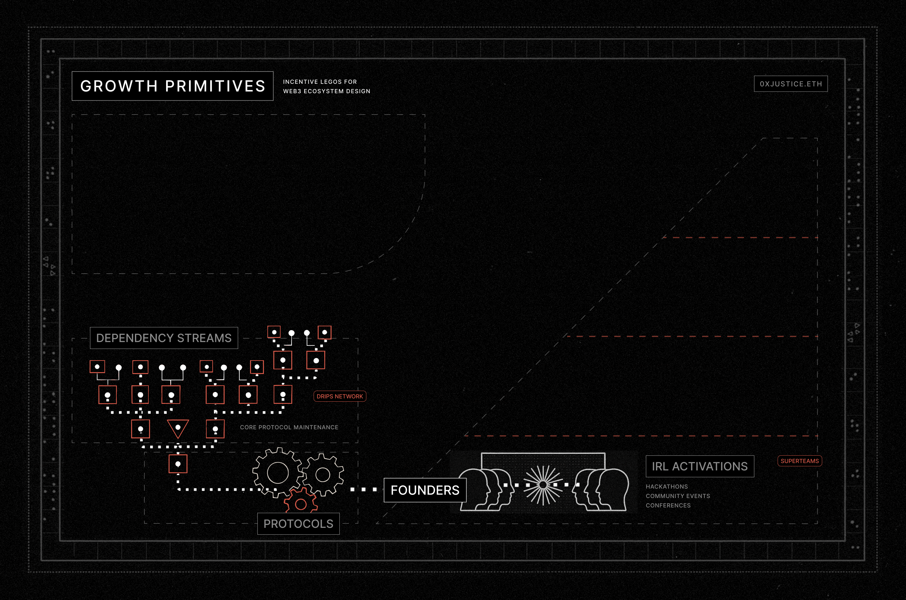
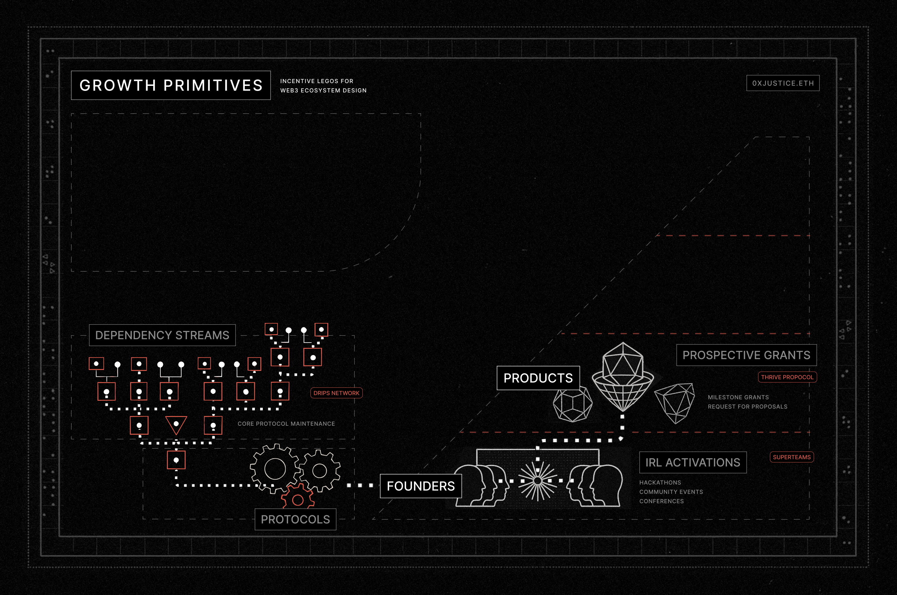
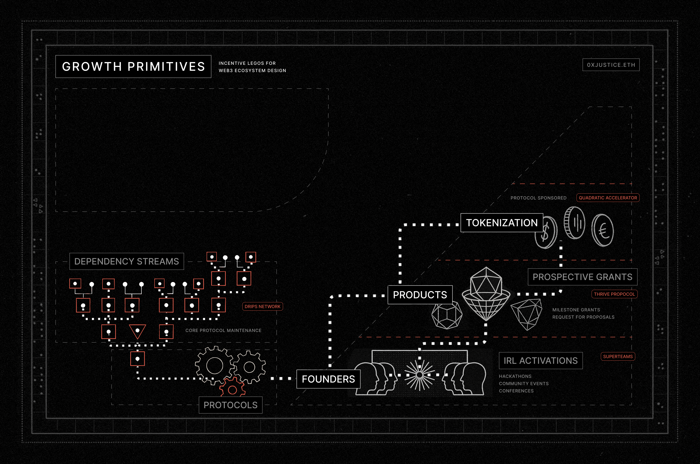
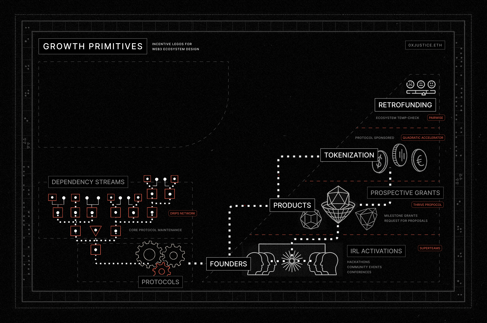
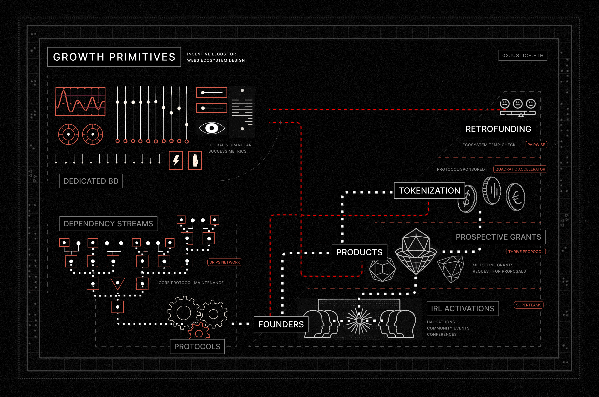
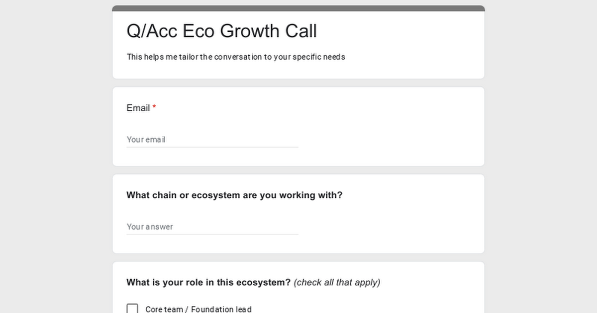

Web3 Growth Primitives
Originally published at https://paragraph.com/@0xjustice/web3-growth-primitives

In web3, we face two questions: What to build and how to build it? There are plenty of ideas to answer the first question. All or none of them could work at different times and for various reasons related to investability, market sentiment, and regulation.
The second question, of how to build, is more critical because it determines how many spins of the wheel we get and whether momentum compounds once a winner is hit. Successful founders will unanimously tell you that the game changes from building the thing to building the thing that builds things after achieving initial product-market fit. It’s this kind of second-order system building that most interests me and that I feel is lacking in Web3.
I’ve spent decades studying organizational design and the last four years exploring how crypto primitives might address this problem space. In this post, I’ll share a list of growth antipatterns, an alternative approach called impact markets, and a list of key growth primitives that every growth leader should have in their toolbox.
Growth Antipatterns
What follows are classic misstep patterns I’ve seen fail firsthand, often in a predictable sequence of disillusionment and reactive strategy.
Build and They’ll Come ☠️
The “Field of Dreams” philosophy, while common, is sadly not true in Web3. Even the best technology and a first-mover advantage will not prevail if founders haven’t designed for growth. The promise of network effects cuts both ways because to enjoy them, you have to break someone else’s. How much better do you have to be? At least 9x-10x better. It’s not enough to be better; you need a growth strategy.
Copy Others ☠️
After users don’t come, panic sets in. What did other people do? Let’s do all that. What does Bitcoin do? Fixed supply, and the number goes up. What did Ethereum do? Let’s copy the EIP thing, and people will show up. None of this is likely to work because times have changed, collective memory evolves, and every growth hack has diminishing returns. History may rhyme, but it does not repeat.
Spray and Pray ☠️
A grant program is the most direct way to drive growth, but it comes with its own set of traps. Done right, you leapfrog incumbents; done wrong, you bleed out. The single biggest misstep is underestimating scope and complexity. This mistake is prevalent for web3 orgs because most have financially outpaced their operational maturity. This mismatch places them in positions where they must manage substantial treasuries with limited experience or competency to do so.
A poor grantee experience has an outsized negative impact. A project already building in an ecosystem often continues unabated. But a bad experience will lead them to explore other options. An overloaded internal grant ops team is a significant warning sign. It means that grantees will suffer. When chains naively assign small, inexperienced internal teams, losses in brand sentiment and social capital are inevitable.
Buy Big Brands ☠️
After being burned by their internal grant efforts, it dawns on someone that they can cut expensive but brag-worthy brand deals to prove their tech is the best. You could call this “paying for tourists” because you’re ultimately paying a massive premium for what could be a temporary ego boost. There’s a growing list of big web2 brands that shuddered their web3 experiments but were likely paid a lot to do them. This tactic can be part of a larger strategy, but by itself, it is an ineffective loss leader.
Play the Game ☠️
“I guess we’re doing what we’re supposed to be doing. The founders are rich, and I just work here, so let’s have fun hosting events and parties. The photos make for good marketing material.” The principal-agent problem reigns supreme here. The goal for middle management becomes minimizing complaints, not market competitiveness. For every person touting a mission-over-margin virtue, there are ten riding the gravy train of a high-pay, low-accountability position treating the ecosystem like a cruise ship rather than a competitive arena.
We’ve seen what doesn’t work. What’s the alternative? It’s by no means a solved discipline, but a novel framing of the challenge is growing.
Impact Markets
All effective decentralized systems arise from a central design. This maxim applies to traditional markets, Web2 marketplaces, and Web3 protocols. At Polygon Labs, I helped spearhead the Grant Allocator (GA) system as a way to scale through fractal division. Instead of managing builder incentives internally, we empowered external entities (GAs) to request funding and submit seasonal impact reports. Those who delivered became eligible for continued support. Here’s what makes this approach unique.
Purposeful Competition
Competition is like compound interest. You need it working for you, not against you. Platformification is how you do that. You create the conditions for competition where success accrues to you. This approach is similar to applying Rendanheyi or 3EO, but with a focus on impact. It’s an idea that’s catching on. See similar principles at work in Kevin Owocki’s Funding Festival, Daniel Ospinas’ Swarm DAOs, and Grant Ships.
Increased Specialization
Monolithic grant management excludes specialization and tacitly assumes there’s one “right way” to fund growth. Expecting a single actor to know every ecosystem domain and deploy diverse allocation methods is asking too much. You need a diversity of domain experts and method specialists to maximize results. Impact markets scale out, not up, in domain vertical and funding methodology.
Protocolized Thinking
Blockchain protocols are a digital philosopher’s stone of market creation. By designing grants and growth systems as markets, we capitalize on crypto’s most powerful design features preemptively. From the beginning, we’re thinking “in protocols.”
Maturation through standardized funding requests & impact reports is the obvious next step. Convergence towards API-centric interactions makes the system accessible to AI agents and other unforeseen programmatic optimizations. We can already envision things like impact meme pools. This line of thinking is a categorically more sophisticated approach to growth than what we see today.
Growth Primitives
Taking an intentional and systematic approach to ecosystem design, far from undermining decentralization, actually safeguards it because architects can prioritize and reinforce things like composability. Here’s a collection of growth components that should be in every growth leader’s toolbox.
Dependency Streams
The thing you’re trying to grow is itself a piece of software. Grant program leads frequently overlook this. It’s ironic because chains will issue millions in grants while their underlying tech misses out on accelerated development. A powerful tool to address this is Drips Network, where money flows directly along software dependency paths. It’s an incredible way to harden the core protocol and attract non-crypto-native open-source developers, as they don’t need a wallet to start receiving rewards.
IRL Activations
Real human interaction in meatspace is valuable because it stokes community, relationships, and networking. IRL hackathons and accelerators are valuable not because of the products produced, but because the human element is sticky. Solana understands this, and it’s why they prioritize localized community building with Superteams. Humans don’t thrive living exclusively online. Screen fatigue is real. The most valuable output of your efforts is ecosystem-aligned founders. Listen to Superteam lead, Kash Dhanda, explain the vision here.

Builder Grants
Milestone grants are a crucial component of the funnel and can be layered on top of hackathons or utilized in conjunction with Requests for Proposals (RFPs). While better than lump sum payouts, they come with a significant operational overhead. This cost is easily underestimated, and administration can unexpectedly balloon beyond the initially expected ROI of the program. This highlights the necessity of utilizing entities especially equipped to manage such distribution methods. Thrive Protocol is a shining example of a group that has mastered this approach.

Sponsored Tokenization
Token launchpads deserve a place at this table as first-class growth primitives. Chains should be sponsoring the most promising projects of their funnel. Protocol-Sponsored Tokenization (PST) ties projects to their ecosystems, allowing communities to influence and participate in the success of new projects. It’s a critical unlock for projects because it provides a series of new strategic levers to the team, including trading fees, token swaps, KPI rewards, and DeFi composability. Many of the top launchpads generate more fees than all L2s combined. Leveraging this reality is a secret weapon, and it’s exactly what we’re doing with q/acc, but more on this later.

Retroactive Rewards
I used to heavily criticise retroactive rewards, partly because I found it incredulous that projects could rely on them to build. However, my thinking has evolved, and now I see them as a powerful component if used in combination with other mechanisms. I especially like them when they are used to extract valuable community feedback. Structured in this way, they serve as a temperature check or NPS score, providing invaluable data. By requiring all ecosystem stakeholders to rank-choice vote on one another, you drive transactions, qualitative insights, and viral marketing. Pairwise is a highly configurable tool designed to do this very thing.

Dedicated BD
You can push your BD team to Always Be Closing, but that misses the uniqueness of web3. We’re in the game of crypto economics and systems engineering. If we’re not thinking that way, we should consider a different line of work. BD and growth must be strategically positioned within an ecosystem’s funnel relative to the other components, ultimately fine-tuning the system as a whole.

Define the baseline success metrics for the entire ecosystem, then specify the success metrics unique to each growth lego. Feed these as fitness functions back into the impact market and let people (and AIs) fight for your advance. The human element is undeniable and inescapable, but that doesn’t obviate the need for strategy. The game should be clear, measurable, and tunable in recurring cycles. You’re BD and growth people are the sous chefs of this symphony.
Conclusion
I’ll skip the recap and cut to the chase. Most teams still don’t grok how tokenization fits into a coherent web3 growth funnel. I’ve spoken with enough ecosystem leads this year to confirm: they’re throwing tools at KPIs without a system. What does a launchpad have to do with grants? Why offer builder grants if you’re already doing retro rewards? One first needs a broader vision for ecosystem funnel design before understanding the tradeoffs of specific elements. You need a vision for value flow before optimizing tactics.
Tokenization is the most overlooked component in today’s systems, yet possibly the most important because it closes your growth circuit. It’s the critical point at which net new value begins to flow back into your system. That’s what we’re designing, the Quadratic Accelerator (q/acc) to solve. We’re a chain-aligned token launchpad engineered for predictable growth. We scout promising projects, mentor founders, and do token launches with built-in buyer protection and stable price discovery. We’ve launched twelve projects so far and delivered a 13x ROI. No hand waving. Just systematic, repeatable, and measurable growth.


We're prepping for S3. Call me if you like winning.
→ $1.5M to $13.3M
→ Up-only across all 12 teams
→ 60% siphoned from competing protocols


 Our S2 Impact Report
Our S2 Impact Report
We continue to redefine token launch mechanics. By combining Quadratic Funding with chain-sponsored ICOs, we unlock compounding value for stakeholders. Here’s the results and a recap of season two:
1/7
 32[
32[
7:15 AM • Jun 11, 2025
](https://twitter.com/singularityhack/status/1932773650828030419)
I’m also personally connected with the builders of Drips, Thrive, and Pairwise and see the latent combinatorial potential of each. The powerful primitives and infrastructure already exist. We only need the hungry and ambitious growth architects. If you lead growth for a protocol and this lit a fire, reach out. Let’s supercharge your flywheel:
[
Q/Acc Eco Growth Call
This helps me tailor the conversation to your specific needs
http://docs.google.com

](https://forms.gle/rrzpz165wv5vtv8x7)
Originally published on 0xJustice.eth